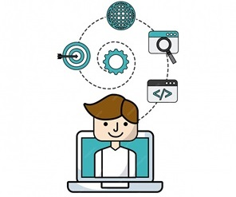

[IFCD0012]
Programación con lenguajes
Orientados a Objetos
y Bases de Datos Relacionales

[MF0223_3] SISTEMAS OPERATIVOS Y APLICACIONES INFORMÁTICAS
[UF1465] Computadores para Bases de Datos (60h)
- Estructura y componentes de un computador
- Sistemas Operativos
- Sistemas de Archivo
- Multiproceso y Multiusuario
- Particionamiento lógico y máquinas virtuales. Virtual Box
- Técnicas de configuración y ajuste de sistemas. El Kernel
[UF1466] Sistemas de Almacenamiento (70h)
- Organización y gestión de la información
- Desarrollo de supuesto práctico: Veracrypt
[UF1467] Aplicaciones microinformáticas e internet para consulta y generación de documentación (40h)
- Procesadores de Texto, Hojas de Cálculo y Edición de Presentaciones. Wikis, GitHub Pages, MarkDown
- Uso de Internet: HTML y FTP (Filezilla)
- Sistemas de control de versiones.GitHub y BitBucket
[MF0226_3] PROGRAMACIÓN DE BASES DE DATOS RELACIONALES
[UF2175] Diseño de Bases de Datos Relacionales (50h)
- Introducción a las bases de datos
- Modelos conceptuales de bases de datos
- El modelo relacional
- El ciclo de vida de un proyecto
- Creación y diseño de bases de datos
[UF2176] Definición y manipulación de datos (80h)
- Lenguajes relacionales
- Operaciones en el modelo relacional
- El lenguaje de manipulación de la base de datos
- Transacciones
- XML
[UF2177] Desarrollo de programas en el entorno de la Base de Datos (80h)
- Lenguajes de programación de bases de datos
[MF0227_3] PROGRAMACIÓN ORIENTADA A OBJETOS
[UF2404] Principios de la Programación Orientada a Objetos (90h)
- Introducción al paradigma orientado a objetos
- Clases y objetos
- Generalización/Especialización: Herencia
- Relaciones entre clases
- Análisis del polimorfismo
- Técnicas de programación estructurada
- Estructura de la información
- Lenguajes de programación orientados a objetos
- Implementación del paradigma utilizando un lenguaje de programación orientado a objetos
[UF2405] Modelo de Programación Web y Bases de Datos (90h)
- Introducción al desarrollo de aplicaciones en el modelo de programación web
- Arquitectura multicapa (n-tier)
- La capa de presentación
- Diseño de bases de datos relacionales
- Acceso a bases de datos relacionales: capa de acceso a datos
- Lenguajes de definición de datos
- Manipulación de los datos
[UF2406] El Ciclo de Vida del Desarrollo de Aplicaciones (80h)
- Proceso de ingeniería del software
- Planificación y seguimiento
- Diagramado
- Desarrollo de la GUI
- Calidad en el desarrollo del software
- Pruebas
- Excepciones
- Documentación
LOS PROYECTOS DE HTML5, CSS3, JAVASCRIPT